Our parish archive
Those Who Have Served
The clergy of St Michael & All Angels through the generations
Explore the people and photographs preserved in our parish archive. These service dates follow the parish’s working record; the photographs come from the display at St Michael’s.
Explore the history of our church
1507–1513
William Mowsurth
Discover their story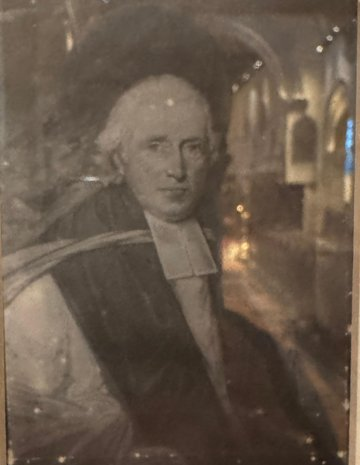
1800–1813
Gerrard Andrewes D.D.
Discover their story
1813–1867
Alfred Burmester
Discover their story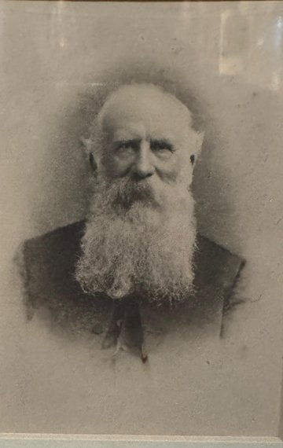
1867–1897
William Henry Harke
Discover their story1897–1920
William Richard Lloyd
Discover their story
1920–1936
Arthur W. Bedford
Discover their story1936–1948
Richard Marmaduke Langdale-Smith
Discover their story1948–1953
A. W. Douglas
Discover their story1953–1978
J. L. / John Cornell
Discover their story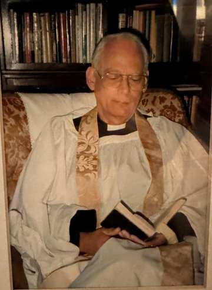
1978–1992
Peter R. Ince
Discover their story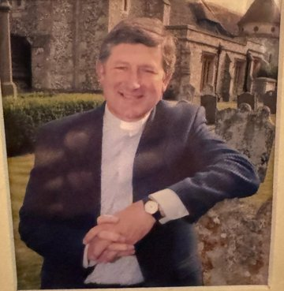
1993–1998
Rev. Canon John Harkin B.A.
Discover their story
1999–2004
Rev. Barbara Steadman-Allen B.Mus.
Discover their story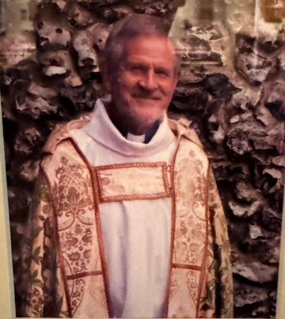
2005–2012
Rev. David Ireland M.A. (Oxon)
Discover their story2013–2017
Rev. Malcolm Raby B.Ed.
Discover their story2018–2020
Canon John Harkin B.A.
Discover their storyDisplay begins 2021
Rev. Dr Sandra Faccini B.Sc., B.Th.
Discover their story
William Mowsurth · 1507–1513
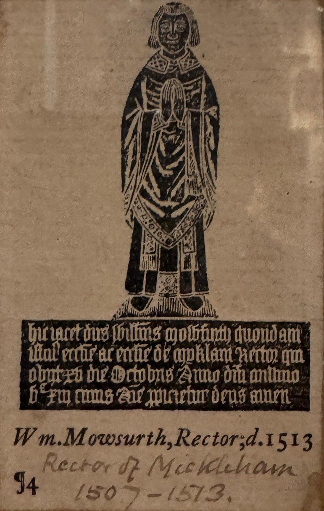
Rector · 1507–1513
William Mowsurth
Their story
William Mowfurth was a late-medieval English priest whose ministry connected Mickleham with several Surrey parishes in the years immediately before the Reformation. Historical records identify him as Rector of Puttenham, Mickleham and Streatham. He died in 1513. Mowfurth appears to have held more than one parish living, a practice that was possible among clergy of his period. His connection with Streatham can be traced to at least 1492, when he appears in the historical list of Rectors of St Leonard's Church. His period as Rector of Mickleham is traditionally recorded as 1507–1513, although the precise starting date at Mickleham still requires confirmation from the original ecclesiastical records. Remarkably, a physical memorial to Mowfurth has survived for more than five centuries. His monumental brass is preserved at St Leonard's Church, Streatham. It depicts him as a priest in Mass vestments, with his hands joined in prayer, standing above a Latin memorial inscription. Historic England records the brass among the significant monuments in the chancel of St Leonard's and dates it to 1513. The survival of the brass is particularly valuable because it gives us something much more personal than a name in a list of Rectors: it allows us to see how William Mowfurth chose to be commemorated at the end of his life. The priestly vestments and prayerful pose place him unmistakably within the religious world of England before the Reformation. He died more than twenty years before Henry VIII's break with Rome and therefore ministered to Mickleham when its worship was still part of the medieval Western Church. Mowfurth's memorial was important enough to attract the attention of later antiquarians. The British Library preserves a rubbing of the brass in the collection of Alfred Ridley Bax, catalogued as a rubbing of William Mowfurth, Rector of Streatham and Mickelham, at Streatham, 1513. A second British Library catalogue record also identifies a sepulchral brass of William Mowfurth at Streatham dated 1513. His connection with Mickleham is therefore not based solely upon later local tradition. It is independently recorded by the British Library, while the general index to the Surrey Archaeological Collections describes William Mowfurth specifically as Rector of Puttenham, Mickleham and Streatham and directs readers to a discussion of his brass in volume 32, pages 125–127. An old image preserved at Mickleham records him as “Wm. Mowsurth, Rector; d. 1513”, with a later handwritten annotation, “Rector of Mickleham 1507–1513.” The spelling of his surname varies in historical material, but modern archival catalogues generally use Mowfurth. William Mowfurth therefore provides a rare tangible link with Mickleham's pre-Reformation history. More than five hundred years after his death, his memorial survives at Streatham, historical rubbings of it survive in the British Library, and an old representation preserved at Mickleham continues to connect his story with the parish he once served.
Sources & further reading
- Surrey Archaeological Collections, Vol. 32, pp. 125–127
Surrey Archaeological Collections, Vol. 32, pp. 125–127 — the Society's general index explicitly identifies “Mowfurth, William, Rector of Puttenham, Mickleham and Streatham, his brass” and points to those pages. This is probably our most useful historical secondary source.
View source - British Library, Add MS 39794 HH, item 8
British Library, Add MS 39794 HH, item 8 — catalogued as “William Mowfurth, Rector of Streatham and Mickelham: Rubbing of brass of, at Streatham: 1513.” This is excellent independent evidence for his connection with Mickleham.
View source - British Library, Add MS 32490 Y, item 14
British Library, Add MS 32490 Y, item 14 — another archival record of the sepulchral brass of William Mowfurth, Rector of Streatham, 1513.
View source - Historic England, List Entry 1100267
Historic England, List Entry 1100267 – Church of St Leonard, Streatham — the official listing records a brass to William Mowfurth, d.1513, in the chancel.
View source - St Leonard's Church, Streatham – parish history
St Leonard's Church, Streatham – parish history — its own history identifies William Mowfurth (1492) as one of its Rectors and says that he is commemorated by a brass in the sanctuary.
View source - The Mickleham historical image in your collection — labelled “Wm. Mowsurth, Rector
The Mickleham historical image in your collection — labelled “Wm. Mowsurth, Rector; d.1513”, with the handwritten annotation “Rector of Mickleham 1507–1513.” I'd catalogue this as local archival evidence, rather than treating the handwritten 1507 date as independently proven.
Gerrard Andrewes D.D. · 1800–1813
Rector · 1800–1813
Gerrard Andrewes D.D.
Their story
Gerrard Andrewes (1750–1825) was educated at Westminster and Trinity College, Cambridge. He was ordained deacon in 1776 and priest in 1778.
During his Mickleham incumbency he also became Rector of St James’s Piccadilly in 1802 and Dean of Canterbury in 1809.
Did you know?
He was offered the Bishopric of Chester in 1812 and declined it.
From the archive
Alfred Burmester · 1813–1867
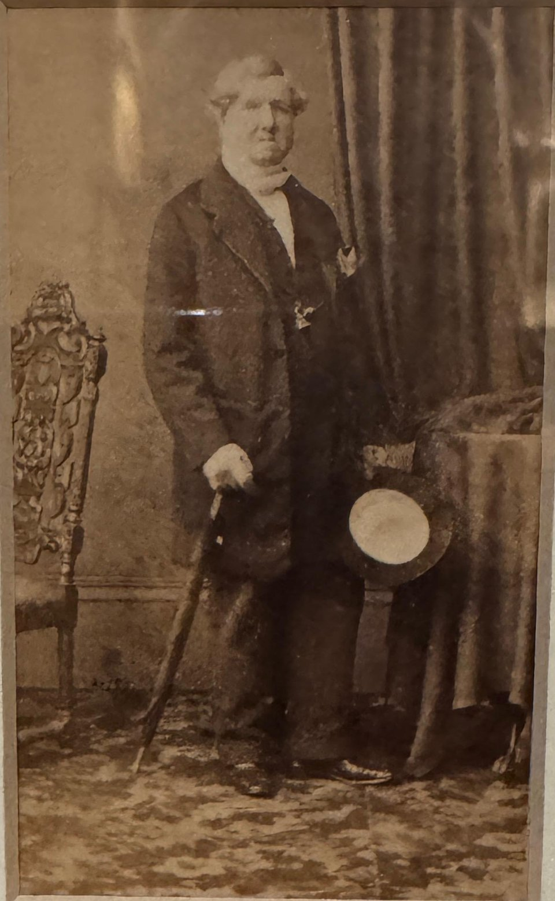
Rector · 1813–1867
Alfred Burmester
Their story
Alfred Burmester served as Rector of Mickleham for approximately 54 years. He is buried in a vault beneath the chancel with his wife Jane and two sons who died in infancy.
St Michael’s in their time
His ministry coincided with substantial nineteenth-century rebuilding and restoration at St Michael’s.
Did you know?
Woodwork he obtained in Belgium around 1840 was later incorporated into the church pulpit.
From the archive

William Henry Harke · 1867–1897
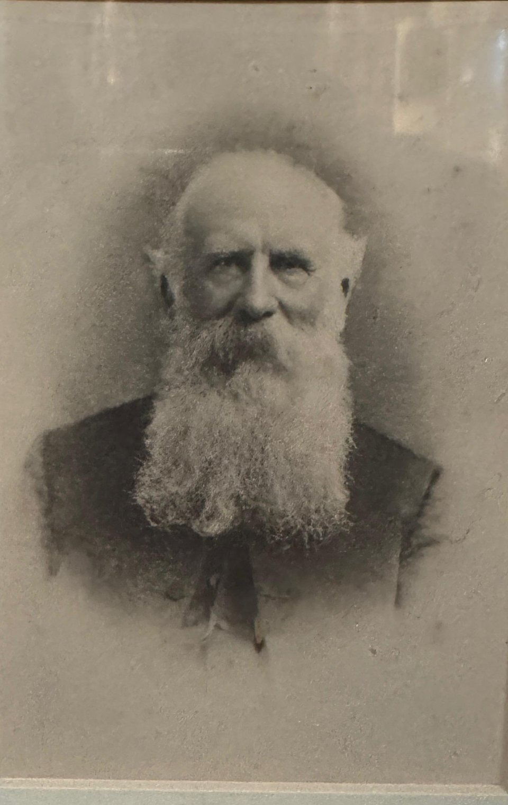
Rector · 1867–1897
William Henry Harke
Their story
An 1891 directory records that William Henry Harke had held the Rectory since 1867 and held an M.A. from Trinity College Dublin.
St Michael’s in their time
Directory material from this period records a parish population of 799 in 1881 and a National School for 100 children.
From the archive
William Richard Lloyd · 1897–1920
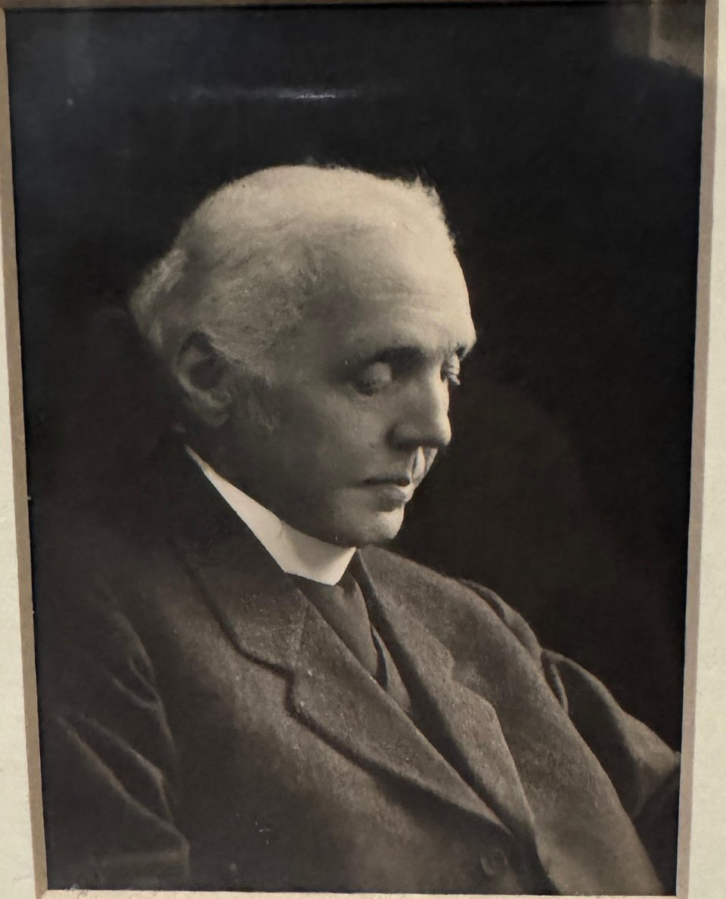
Rector · 1897–1920
William Richard Lloyd
Their story
Contemporary directory material confirms that William Richard Lloyd held the Rectory from 1897 and held an M.A. from Trinity College Dublin.
From the archive
Arthur W. Bedford · 1920–1936
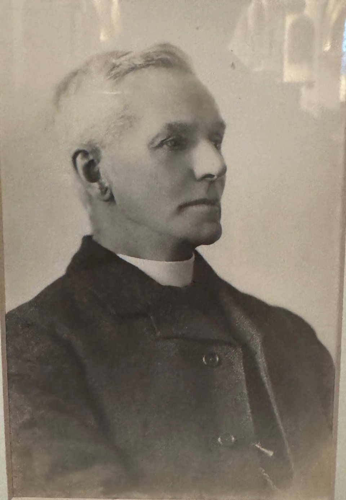
Rector · 1920–1936
Arthur W. Bedford
Their story
Local historical material records Sunday services at both Mickleham and Westhumble during Arthur Bedford’s ministry. He was assisted by a curate and retired clergy, including his predecessor William Richard Lloyd.
St Michael’s in their time
In 1929, 27 candidates were presented for confirmation.
Did you know?
A parish account from 1925 describes a water-powered church organ and pressure problems after houses were built in Dell Close.
From the archive

Richard Marmaduke Langdale-Smith · 1936–1948
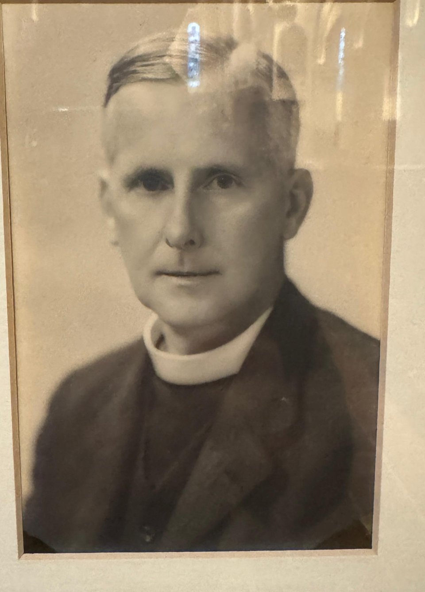
Rector · 1936–1948
Richard Marmaduke Langdale-Smith
The parish working record lists Richard Marmaduke Langdale-Smith as Rector of Mickleham, 1936–1948.
From the archive
A. W. Douglas · 1948–1953
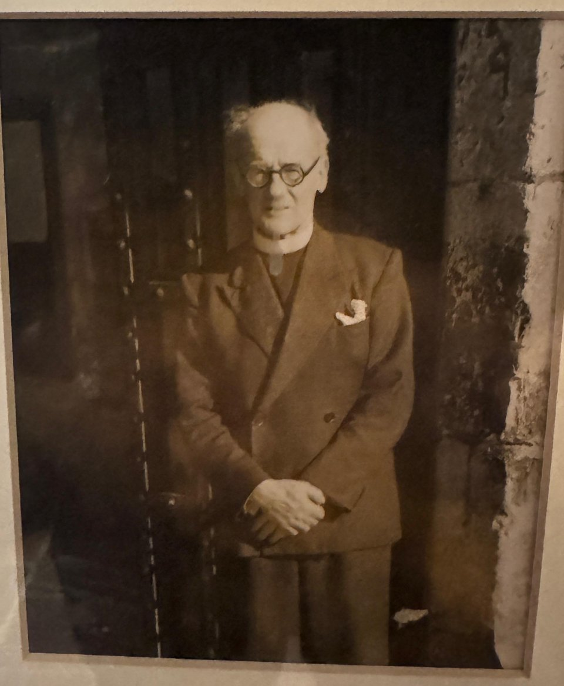
Rector · 1948–1953
A. W. Douglas
The parish working record lists A. W. Douglas as Rector of Mickleham, 1948–1953.
From the archive
J. L. / John Cornell · 1953–1978
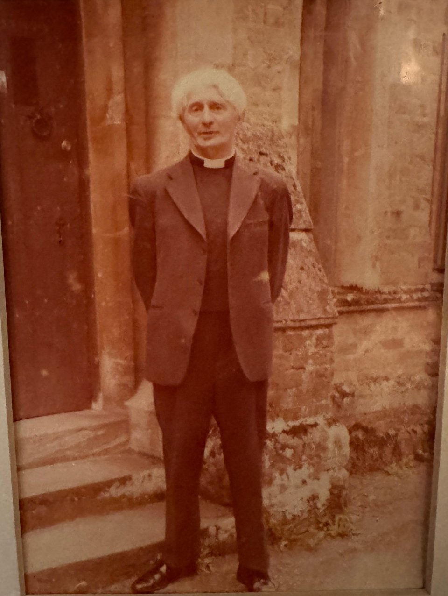
Rector · 1953–1978
J. L. / John Cornell
Their story
A parish baptism register begun under W. R. Lloyd in 1913 contains its final entry on 22 December 1974, while John Cornell was Rector.
From the archive
Peter R. Ince · 1978–1992
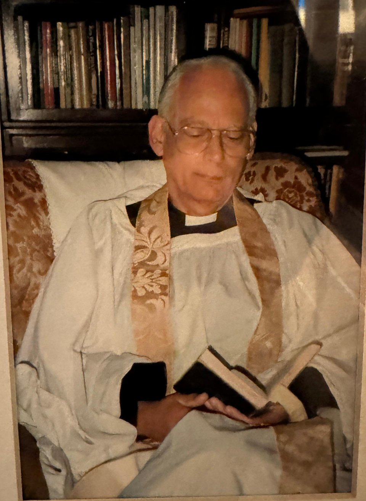
Rector · 1978–1992
Peter R. Ince
Their story
Local historical material records Rector Peter Ince and the churchwardens in negotiations concerning the freehold of Village Hall car-park land in February 1988.
From the archive
Rev. Canon John Harkin B.A. · 1993–1998
Parish clergy · 1993–1998
Rev. Canon John Harkin B.A.
Their story
John Harkin served Mickleham during two separate periods: 1993–1998 and 2018–2020.
Appointment reporting from 1998 identifies him as Priest-in-Charge of Mickleham and Chaplain of Box Hill School when he left for Jersey. Parish material from 2018 describes his return after twenty years.
From the archive
Rev. Barbara Steadman-Allen B.Mus. · 1999–2004
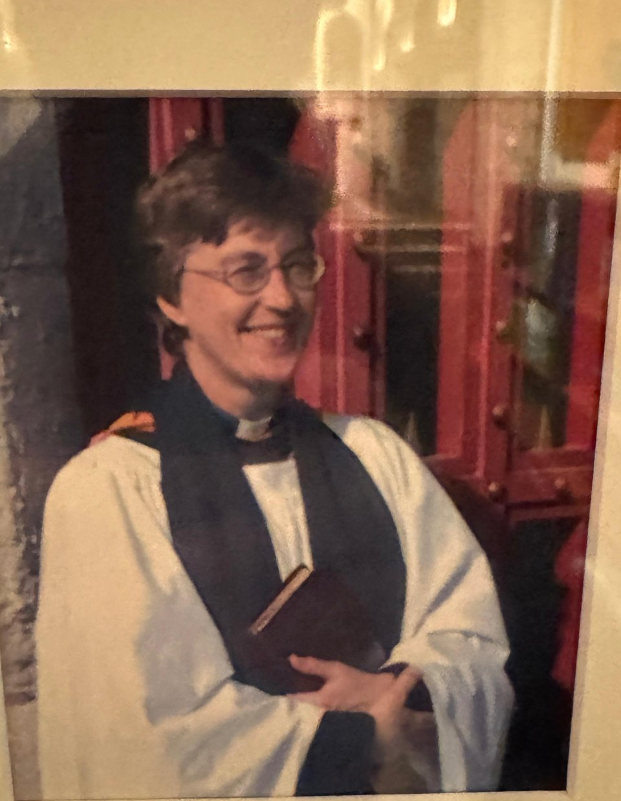
Parish clergy · 1999–2004
Rev. Barbara Steadman-Allen B.Mus.
Their story
Contemporary material identifies Barbara Steadman-Allen as Priest in Charge around 2000.
When Leatherhead and Mickleham entered a new benefice arrangement in 2002, she continued as the priest responsible for Mickleham while the parishes retained their own PCCs and identities.
From the archive


Rev. David Ireland M.A. (Oxon) · 2005–2012
Parish clergy · 2005–2012
Rev. David Ireland M.A. (Oxon)
Their story
The church display records David Ireland’s service from 2005 to 2012 and his qualification as M.A. (Oxon).
From the archive

Rev. Malcolm Raby B.Ed. · 2013–2017
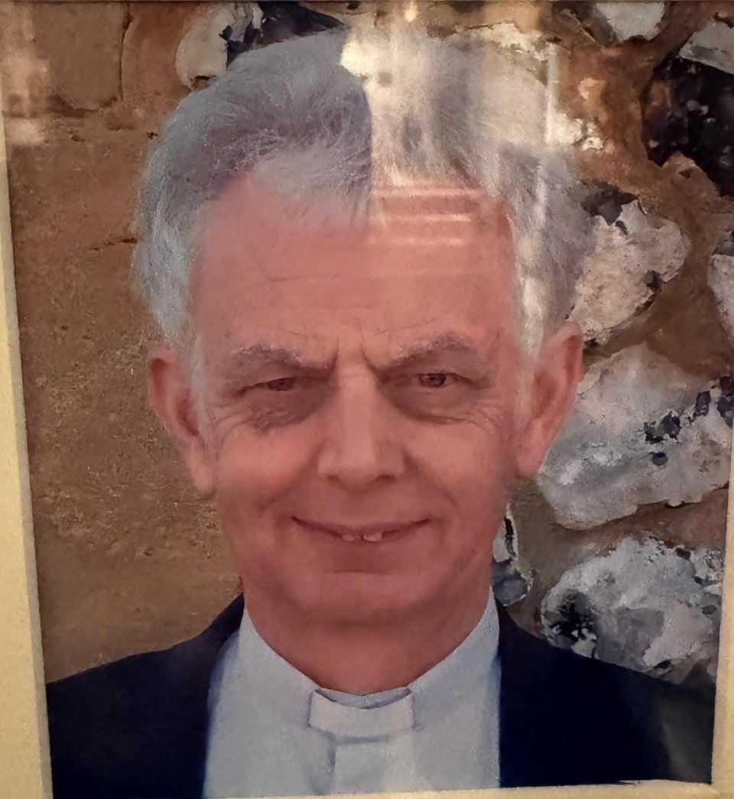
Parish clergy · 2013–2017
Rev. Malcolm Raby B.Ed.
Their story
Malcolm Raby came to Mickleham in June 2013 as a house-for-duty priest after retiring from full-time ministry as Vicar of Over and Longstanton in the Diocese of Ely.
He lived in the parsonage and undertook parish duties without stipend under the house-for-duty arrangement. Parish material announced his retirement in November 2017.
From the archive

Canon John Harkin B.A. · 2018–2020
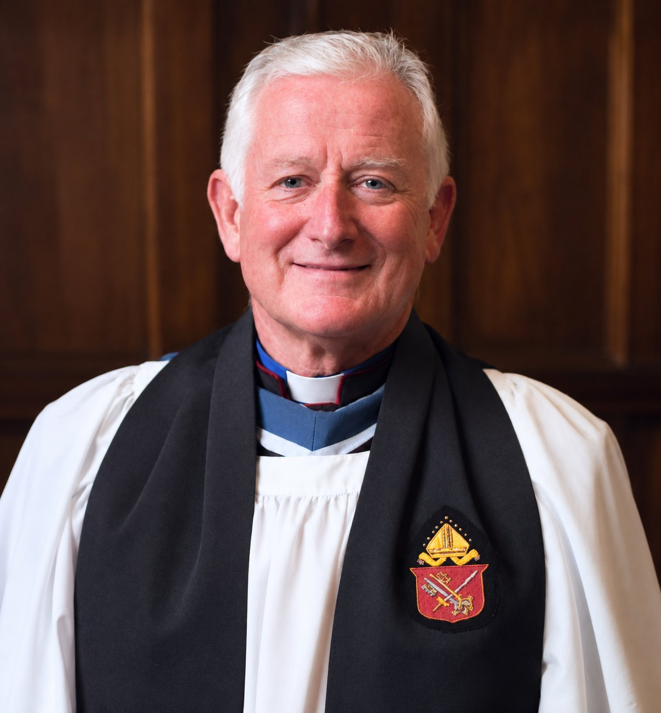
Rector · 2018–2020
Canon John Harkin B.A.
Their story
Canon John Harkin returned to St Michael & All Angels in 2018, around twenty years after his earlier ministry in Mickleham. His return gave the parish an unusual continuity: a priest who already knew the church and its community came back to serve a new generation. He remained at St Michael’s until 2020. This was John Harkin’s second period of ministry at Mickleham. His earlier service, from 1993 to 1998, is recorded separately in this archive.
Rev. Dr Sandra Faccini B.Sc., B.Th. · Display begins 2021
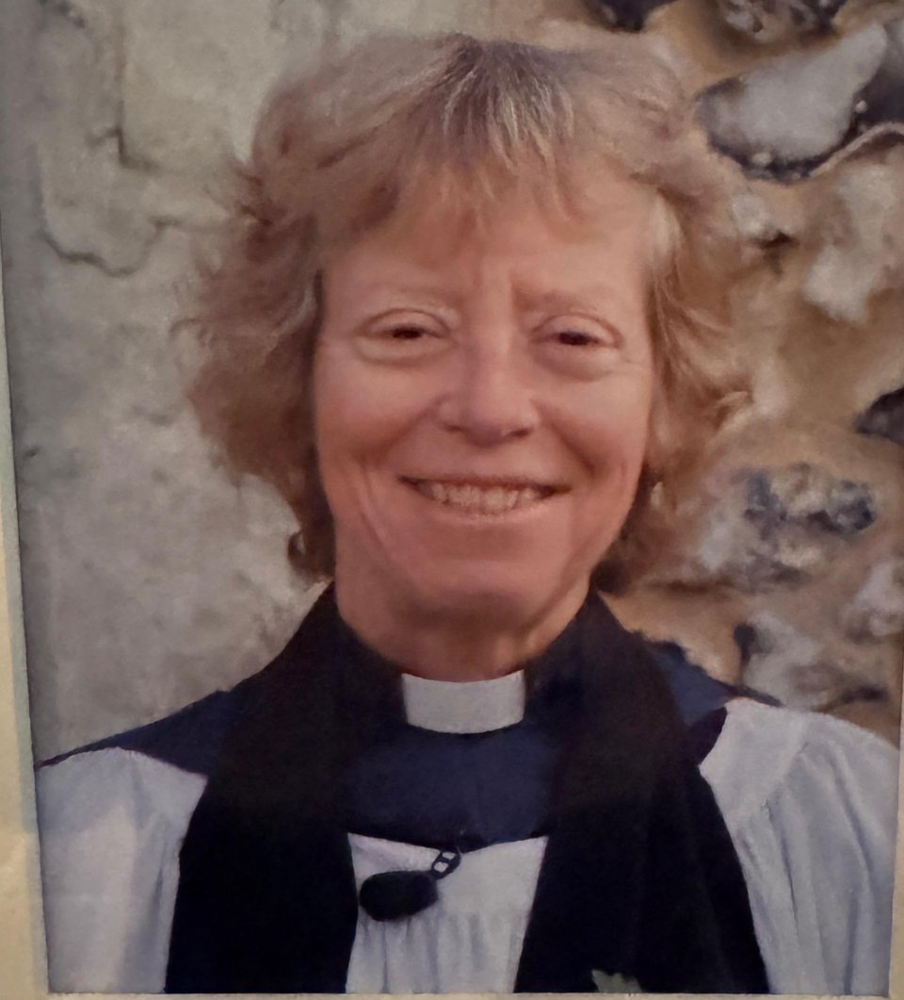
Parish clergy · Display begins 2021
Rev. Dr Sandra Faccini B.Sc., B.Th.
Their story
The church display begins Sandra Faccini’s period in 2021. Parish material identifies her as Parish Priest.